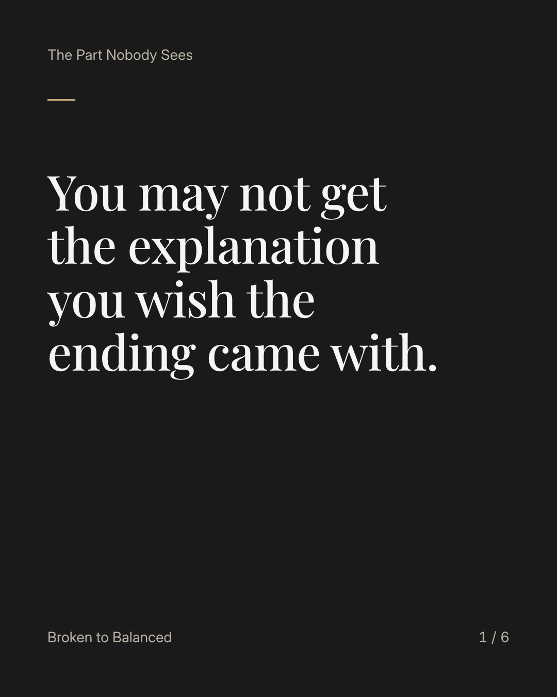
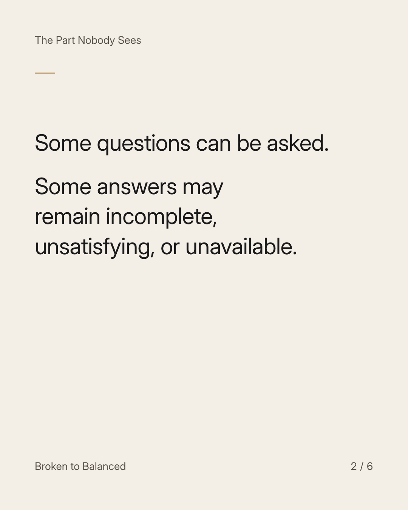
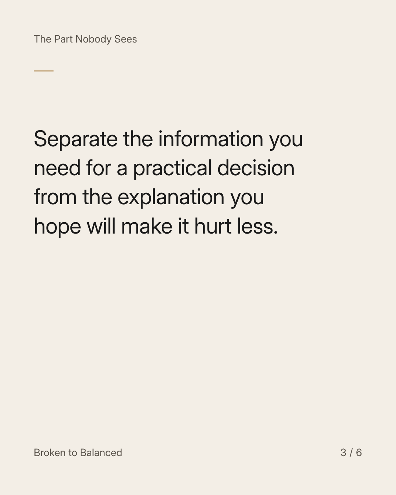
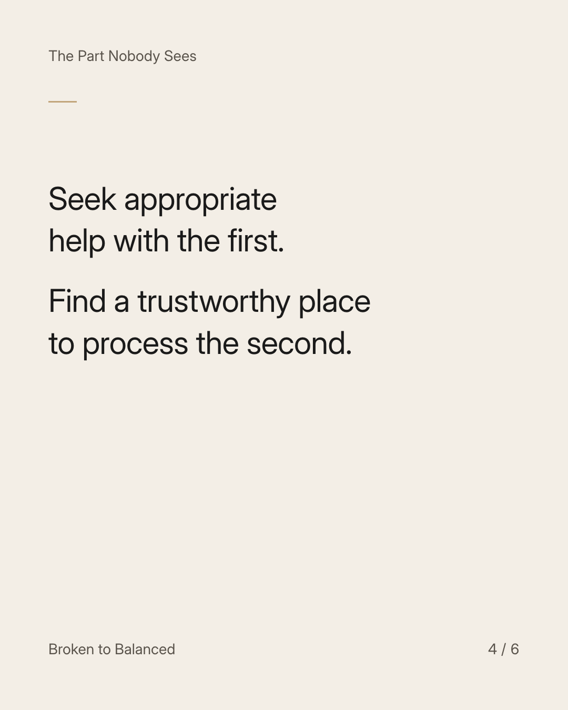
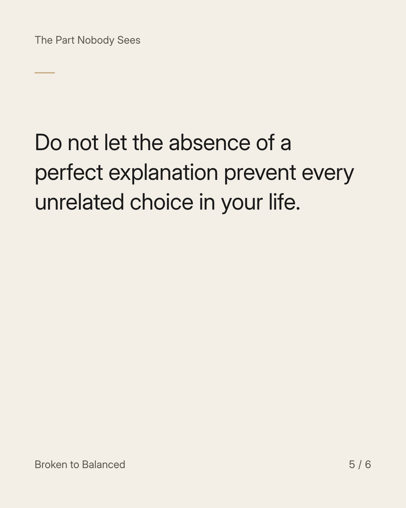

Exact text and accessibility text
You may not get the explanation you wish the ending came with.
Slide 1 of 6. You may not get the explanation you wish the ending came with.


Exact text and accessibility text
Some questions can be asked. Some answers may remain incomplete, unsatisfying, or unavailable.
Slide 2 of 6. Some questions can be asked. Some answers may remain incomplete, unsatisfying, or unavailable.


Exact text and accessibility text
Separate the information you need for a practical decision from the explanation you hope will make it hurt less.
Slide 3 of 6. Separate the information you need for a practical decision from the explanation you hope will make it hurt less.


Exact text and accessibility text
Seek appropriate help with the first. Find a trustworthy place to process the second.
Slide 4 of 6. Seek appropriate help with the first. Find a trustworthy place to process the second.


Exact text and accessibility text
Do not let the absence of a perfect explanation prevent every unrelated choice in your life.
Slide 5 of 6. Do not let the absence of a perfect explanation prevent every unrelated choice in your life.

Exact text and accessibility text
Send this to someone waiting for one conversation to unlock the rest of their future.
Slide 6 of 6. Send this to someone waiting for one conversation to unlock the rest of their future.
Exact caption
Plain-text fallback: select and copy the caption.